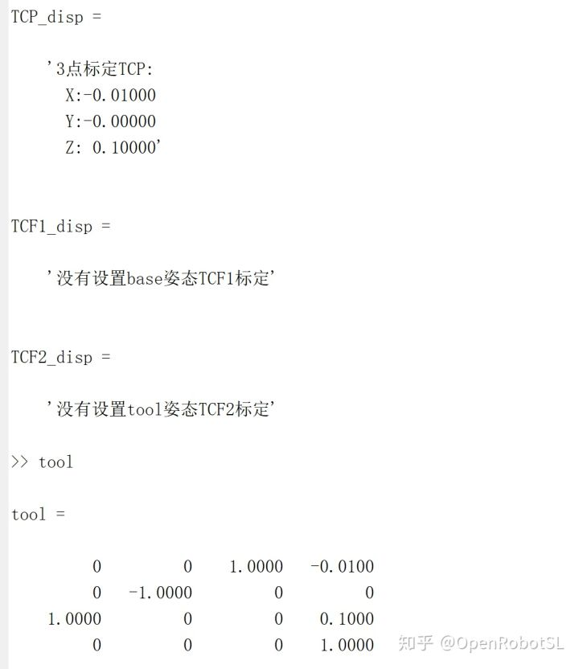
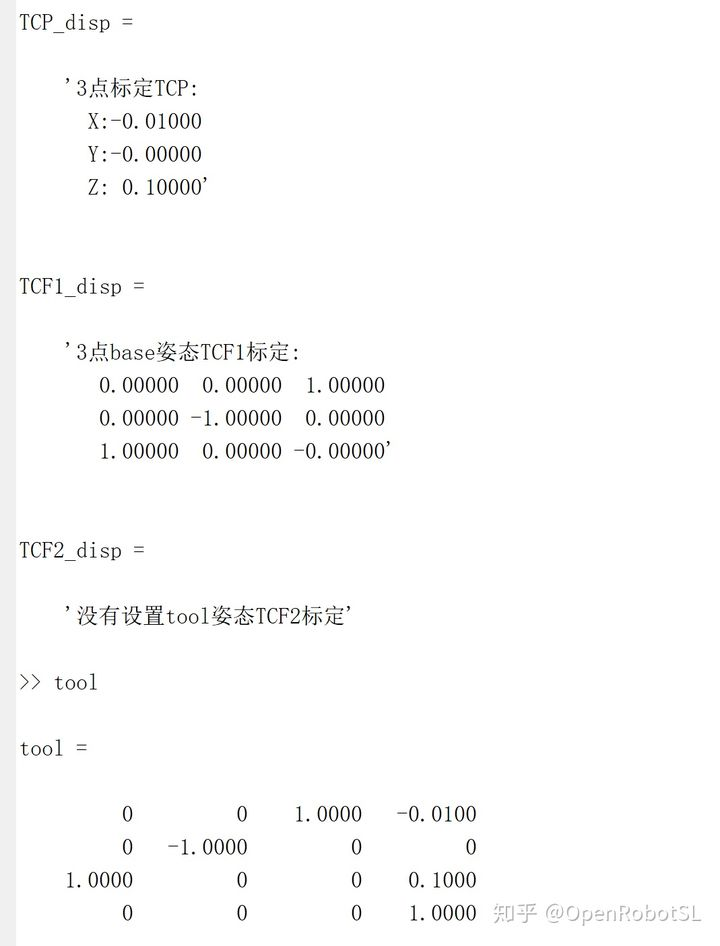
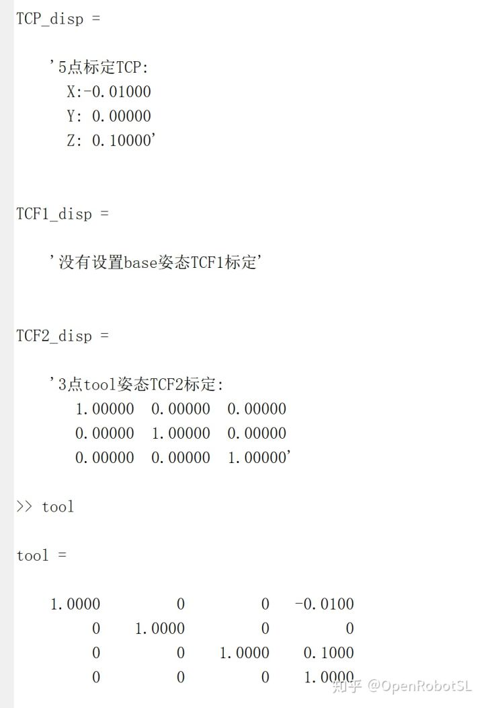

Home
本文转载自： https://zhuanlan.zhihu.com/p/272555445
本菜，只是简单复现基础框架，也就是简单好用的算法，帮大家入个门，其他复杂优化算法希望大家自己学习哈
理论公式和python版本去古月居可看到
https://www.guyuehome.com/16140本算法支持多点标定>=3，和两种姿态标定方法，都有注释哈，适用于不同情况的姿态标定法。验证图：tool是真实末端坐标系来验证。 分别测试单独标定TCP 3点法。 3点标定TCP TCF1；5点标定TCP TCF2；
由于我的输入格式比较复杂，大家拆分出标定部分可以单独测试哈哈哈哈



%% 机械臂tool位置姿态
function [TCP_disp,TCF1_disp,TCF2_disp]=test_tcp_tcf(t)
%t的第一行设置全0，如果用tcp设置t(1,1)=1;
%多点tcp数据，设置t(1,2)>=3;
%如果用tcf1，基于参考坐标系设置t(1,3)=1;tcf1要求必须设置tool姿态与参考一致,因为是沿着base的 xz平移,这样标出的就是R_e_tool姿态
%如果用tcf2，基于tool自定义坐标系，因为是沿着自定义tool的 xz平移，设置t(1,4)=1;,tcf2要求必须设置tcp已知，这样计算出的就是R_e_tool姿态
%t4t5t6也是末端的不是tool的
%1是TCP
%2是TCF，第一组4*4的末端设置平行于地面,第二组沿着X，第三组从第二组再沿着Z
%tool是理论姿态，设置为与基坐标一致。tcf1理论需要理论tool（计算不需要）；tcf2不需要tool，但是需要第一步的TCP；（计算不需要）
if t(1,1)==1
PointNumber=t(1,2);
R_data_1=[];
R_data_2=[];
P_data_1=[];
P_data_2=[];
%多点TCP标定
for ii=1:PointNumber
ti(:,:,ii)=t(4*ii+1-3:4*ii+1,1:4);
end
for i=1:PointNumber-1
j=i+1;
R_data_1=[R_data_1;ti(1:3,1:3,i);];
R_data_2=[R_data_2;ti(1:3,1:3,j);];
P_data_1=[P_data_1;ti(1:3,4,j);];
P_data_2=[P_data_2;ti(1:3,4,i);];
end
%% 计算求解TCP%方法
F1=R_data_1-R_data_2;
F2=P_data_1-P_data_2;
TCP=pinv(F1)*F2;
TCP_disp=sprintf('%d点标定TCP: \n X:%8.5f \n Y:%8.5f \n Z:%8.5f',PointNumber,TCP(1),TCP(2),TCP(3));
else
TCP=[];
TCP_disp=sprintf('没有设置标定TCP');
end
%%%%%%%%%%%%%%%%%%%%%%%%%%%%%
%4*PointNumber+2是tcf的的第一行
PointNumber=t(1,2);%这是tcp的numb如果没有TCP就是0
tcf_pn=4*PointNumber+2;
if t(1,4)==1||t(1,3)==1
if t(1,1)==1&&(t(1,4)==1||t(1,3)==1)
%TCF,这种方法（第一组末端必须平行于地面，貌似不一定），末端工具姿态与基坐标系姿态一直，这个TCF只是更新理论TCF
%姿态只需要三点,六关节工业机器人工具坐标系的标定
t4=t(tcf_pn:tcf_pn+3,1:4);
t5=t(tcf_pn+4:tcf_pn+7,1:4);
t6=t(tcf_pn+8:tcf_pn+11,1:4);
elseif t(1,1)==0&&(t(1,4)==1||t(1,3)==1)
t4=t(2:5,1:4);
t5=t(6:9,1:4);
t6=t(10:13,1:4);
end
if t(1,3)==1
vx=transl(t5)-transl(t4);
vz=transl(t6)-transl(t5);
N=[vx;vz];
t4o=t4;
dx=norm(vx);
dz=norm(vz);
M=[dx*t2r(t4o),zeros(3,3);
zeros(3,3),dz*t2r(t4o);];
r=pinv(M)*N;
n=r(1:3);
a=r(4:6);
o=cross(a,n);
a=cross(n,o);
TCF1=[n o a];
TCF1_disp=sprintf('3点base姿态TCF1标定: \n %8.5f %8.5f %8.5f \n %8.5f %8.5f %8.5f \n %8.5f %8.5f %8.5f',TCF1);
else
TCF1_disp=sprintf('没有设置base姿态TCF1标定');
end
%%%%%%%%%%%%%%%%%%%%%%%%%%%%%%%%%%%%%%
%TCF方法2，这种方法是人为定义tool坐标系方向,t4作为原点沿着tool x运动后t5；t4作为原点沿着tool z运动后t6
%方法2适合直接求tcf,方法一适合更新tcf
if t(1,4)==1&&t(1,1)==1
t4o=t4;
t5o=t5;
t6o=t6;
m1=inv(t2r(t4o))*(t2r(t5o)*TCP-t2r(t4o)*TCP+transl(t5o)-transl(t4o));
n1=norm((t2r(t5o)*TCP-t2r(t4o)*TCP+transl(t5o)-transl(t4o)));
n=m1/n1;
m2=inv(t2r(t4o))*(t2r(t6o)*TCP-t2r(t4o)*TCP+transl(t6o)-transl(t4o));
n2=norm((t2r(t6o)*TCP-t2r(t4o)*TCP+transl(t6o)-transl(t4o)));
a=m2/n2;
o=cross(a,n);
a=cross(n,o);
TCF2=[n o a];
TCF2_disp=sprintf('3点tool姿态TCF2标定: \n %8.5f %8.5f %8.5f \n %8.5f %8.5f %8.5f \n %8.5f %8.5f %8.5f',TCF2);
else
TCF2_disp=sprintf('没有设置tool姿态TCF2标定');
end
else
TCF1_disp=sprintf('没有设置base姿态TCF1标定');
TCF2_disp=sprintf('没有设置tool姿态TCF2标定');
end
end
======================================================================
我的测试结果及程序
下面是我测试的代码：